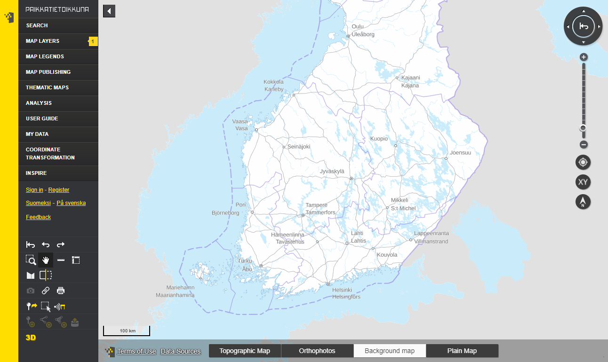
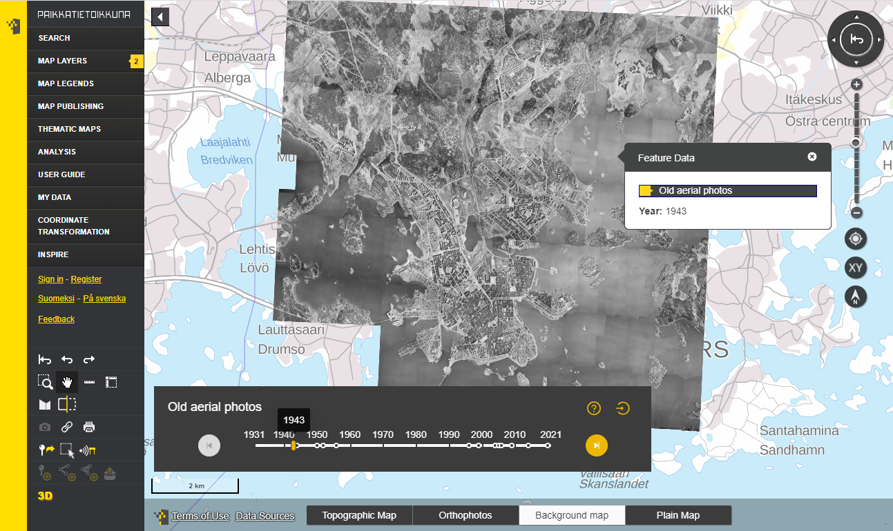
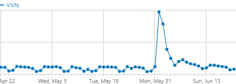

Year in review 9/2021
Sami Mäkinen - NLS Finland
National geoportal Finland

History in nutshell
- National geoportal
- Open source it
- ???
- Profit
### Oskari
- Server: Java built with Maven
- Frontend: JS built with Webpack
- Requires:
- PostgreSQL (PostGIS)
- Redis
- (Spatial Data Infrastructure)
Application components
- For building web mapping software
- APIs and extension points on multiple levels
- oskari-server
- sample-server-extension
- oskari-frontend
- oskari-frontend-contrib
- sample-application
### WFS / OGC API Features
Client rewrite
- introduced 1.52
- default 1.53
- forced migration 1.54
Cleanup and migration for related db content for 2.0
### Vector features
- Frontend can query service metadata
- localized names
- property value types
- other customization configs
- combined older API endpoints
- Styling of vector features improved
- GeoJSON || MVT as output
- Filters
### Oskari 2.0
- Upgrade path: 1.x -> 1.56 -> 2.x
- Library updates requiring manual work
- JTS (com.vividsolutions -> org.locationtech)
- Flyway DB (major API change)
- Maven artifact naming changes:
- groupId = org.oskari
- artifactIds streamlined
### Oskari 2.0 - database
- Clean up "legacy" db initialization
- Detect migration from 1.56 vs clean db
- Create db fully with Flyway
- Content helpers / admin functionalities
- Ibatis -> MyBatis
- DB tables renamed for consistency
### Server clustering
- Persistent user sessions (Spring/AWS ElastiCache)
- Cache synchronization
- Health/status check paths
- Programmatic log level changing
Scattered timeseries data

Hitting the national main news

### Performance improvements
- Layerlisting
- Starting point: ~2s
- Cached: ~300ms
- Without coverage data:
- Response size 1.2MB -> 287kB
- Response time ~130ms
- ~2400 layers
### More performance changes
- WMTS-capabilities XML -> JSON
- Frontend vector layer styling improvements
- Idea: layerlist 2.0
- Idea: AppSetup
- Idea: Changes to frontend code bundling
### Logging
- Logging improvements /less noise
- Change log levels at runtime
- Audit Log
- Identifier headers (user agent/referrer)
- Plugin mechanism to track proxied requests
### More customization options
- RPC: application specific functionalities
- Customizing feature data
- handler per layer
- custom renderers per property
### Other
- Travis CI -> GitHub Actions
- React.js migration continues
- GDAL no longer used (GPX & Mid/Mif imports)
- GeoPackages support for content import
- Java 11 compliancy
- Quality of life improvements for admins:
- New layer admin UI
- Check if map layer is used before removing layer
# Thank you!
- https://oskari.org
- https://github.com/oskariorg
- Oskari-user@lists.osgeo.org
- https://gitter.im/oskariorg/chat